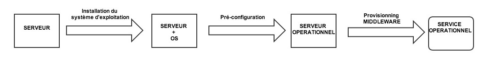
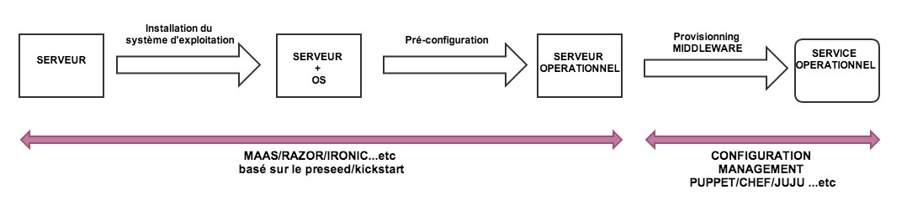
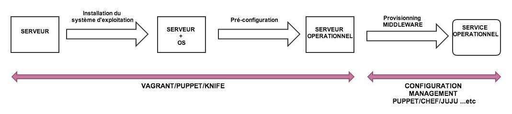
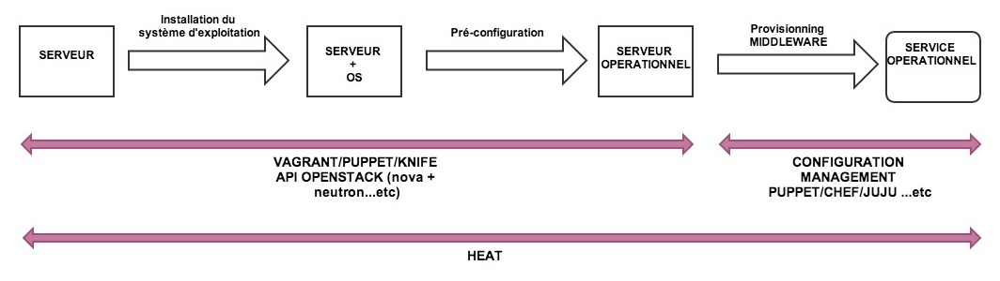
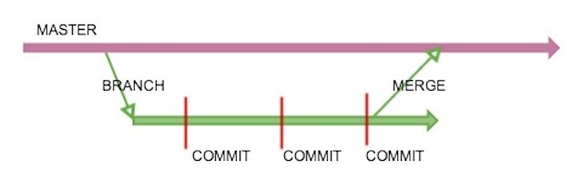

Par Léonard TAVAE / @leonardtavae
Cette présentation a été créée avec le framework reveal.js https://github.com/hakimel/reveal.js
Le principe d'une installation d'un serveur
Le principe d'une installation d'un serveur
automatisation dans le monde physique
Le principe d'une installation d'un serveur
automatisation dans le monde virtuel
Le principe d'une installation d'un serveur
automatisation dans le cloud (openstack)
Si nous pouvons automatiser le provisionning d'un serveur
Alors nous pouvons automatiser le provisionning d'une architecture complexe de plusieurs serveurs
C'est ce qu'on appelle l'IaaC : Infrastructure as a Code
Démonstration
Workflow habituel
Un exemple : le service NTP
# class ntp
#
class ntp {
# On installe un paquet
package{'ntp':
ensure => latest,
}
$servers = ['0.debian.pool.ntp.org iburst',
'1.debian.pool.ntp.org iburst',
'2.debian.pool.ntp.org iburst',
'3.debian.pool.ntp.org iburst', ]
# On configure un fichier de configuration
file { '/etc/ntp.conf':
ensure => file,
require => Package['ntp'],
owner => root,
group => root,
mode => '0644',
content => template('ntp/ntp.erb'),
notify => Service['ntp'],
}
# On s'assure que le service se lance automatiquement et ...
# On s'assure que le service est démarré
service {'ntp':
ensure => running,
enable => true,
require => File['/etc/ntp.conf'],
}
}
Démonstration
Mais pourquoi en a t'on besoin ?
Git le workflow
Démonstration
Démonstration